Yeremya · Eşlenik Evren
Dünya
Eirahoutmoss'un eşlenik evreni Yeremya'nın maddi dünyası. Başlangıç noktası Mezopotamya. Burada büyü yoktur; her şey frekans ve titreşim fiziğiyle işler.
- Durum
- Eşlenik evren Yeremya
Evrenin hafif sürümü: tüm galaksiler ve dünyalar, üç boyutlu harita olmadan. Zayıf bağlantılarda, ekran okuyucularla ve çevrimdışı okumak için.
Eirahoutmoss'un eşlenik evreni Yeremya'nın maddi dünyası. Başlangıç noktası Mezopotamya. Burada büyü yoktur; her şey frekans ve titreşim fiziğiyle işler.
Kadim bilgeliğin ve ağırlaşmış bir mistik enerjinin hakim olduğu, zamanın yavaş aktığı yoğun bir atmosferik tabaka. Evrenin ilk çağlarından kalma, ruhsal frekanslarla beslenen ve biyolojik ölümsüzlük sergileyen esrarengiz fauna.
Efsanelerin yankılandığı, akustik olarak rezonansa giren hafif ve berrak bir gaz tabakası. Tarihsel kayıtları biyolojik hafızalarında tutan, lirik sesler çıkaran ve kadim medeniyetlerle eşgüdümlü yaşayan fauna.
Yıl boyunca ılıman, polen ve organik aerosollerle bezeli verimli bir iklim tabakası. Toprağın bereketini doğrudan bünyesine katan zengin bitki türleri ve doğal çevreyle uyumlu fauna.
Yıldız radyasyonunu filtreleyen, ebedi bir alacakaranlık ve kozmik auroralar sunan prizmatik iyonosfer. İletişimlerini sesle değil, karmaşık ışık dalgaları ve biyolojik parıltılarla sağlayan fototropik zarif fauna.
Yüksek basınçlı, ışık geçirgenliği minimum olan, hidrojen-sülfür zengini yoğun bir baskın tabaka. Basınca tam uyumlu, biyolüminesans sinyallerle haberleşen, devasa abyssal (derin deniz) formlar.
Ses dalgalarının fiziksel bir doku oluşturduğu, sürekli yankılanan hafif, yüksek frekanslı bir gaz tabakası. İletişimini yüksek frekanslı seslerle kuran, ortamın yankısına göre form değiştirebilen akışkan yaratıklar.
Metalik tozlarla doymuş, manyetik fırtınaların yönettiği, düşük nemli ve yüksek iletkenliğe sahip iyonize tabaka. Silikon bazlı, elektromanyetik sinyallerle yapısal bütünlüğünü koruyan ve metalik yüzeylerde yürüyebilen sert kabuklu formlar.
Tüm diğer sektörlerin oksijen, karbon ve manevi enerji rezonanslarını dengeleyen, yaşam verimli, zengin bir döngü. Evrenin tüm ekosistemlerine genetik veri sağlayan, yaşayan, gelişen ve simbiyotik bir ağ oluşturan kadim fauna ve flora.
Saf yıldız radyasyonu, iyonize plazma akımları ve ışık hızına yakın parçacıkların oluşturduğu koruyucu bir foton tabakası. Saf foton enerjisiyle metabolizmasını sürdüren, radyasyona tam uyumlu ve enerji formunda var olan ışık-tabanlı yaratıklar.
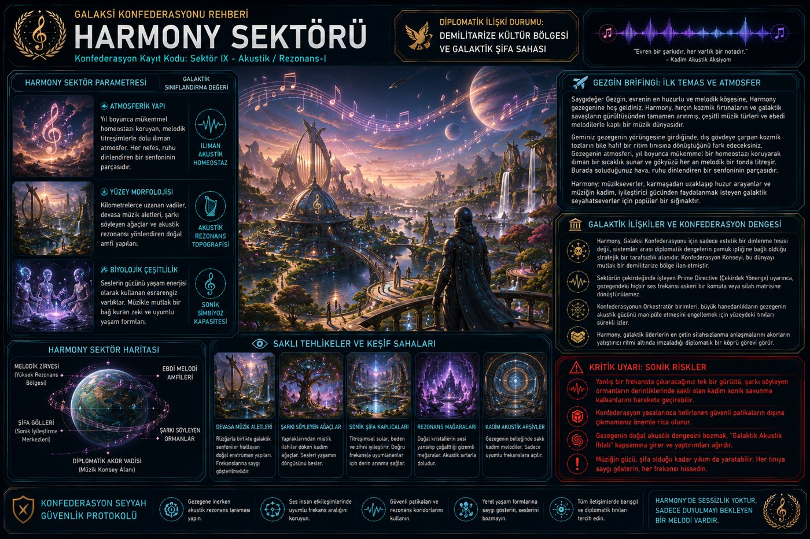
Saygıdeğer Gezgin, evrenin en huzurlu ve melodik köşesine, Harmony gezegenine hoş geldiniz. Harmony, hırçın kozmik fırtınaların ve galaktik savaşların gürültüsünden tamamen arınmış, çeşitli müzik türleri ve ebedi melodilerle kaplı bir müzik dünyasıdır.
Sürekli elektrik boşalmaları ve yüksek enerjili iyonize parçacık akımları ile yüklü, iletken gaz tabakası. Elektrik akımlarını besin olarak kullanan, verileri ışık sinyalleriyle işleyen yüksek iletkenliğe sahip plazma formları.
Evrenin tüm sektörlerini tek bir noktadan görebilmeyi sağlayan, yüksek irtifalı ve son derece berrak bir optik spektrum tabakası. Bilişsel yetenekleri en üst düzeyde olan, zamanı ve mekanı "bütünsel zeka" katmanında (Sayfa 1) algılayabilen vizyoner türler.
Belirsizlik ilkesine bağlı olarak sürekli durum değiştiren, olasılık bulutlarından oluşan kararsız kuantum tabakası. Birden fazla kuantum durumunda aynı anda var olabilen, gözlemci etkisiyle form değiştiren süperpozisyon yaratıkları.
Zihinleri genişleten, hayal gücünün sınırlarını zorlayan ebedi onirik parıltı. Rüya ortamına tam adapte olmuş, benzersiz yaratıcı vizyonlara sahip esrarengiz fauna.
Kendi kimyasal yapısını, temas ettiği gözlemciye veya enerji formuna göre anlık olarak optimize eden reaktif gaz karışımı. Sistematik öğrenme döngülerini bünyesinde barındıran, çevresel veriye göre "kodunu" değiştirebilen simbiyotik organizmalar.
Görünür ışığı milyonlarca farklı spektruma ayıran, yüksek kırılma indisine sahip değişken kristal tozlu hava kütlesi. Işık spektrumlarının farklı katmanlarında form değiştiren, gözlemciye göre renklenen foton-bazlı yaratıklar.
İşlem kapasitesini maksimize eden, statik elektriği minimize edilmiş, iyonik dengesi kusursuz, ultra verimli bir gaz karışımı. İşlemci hızlarına göre metabolizmasını optimize eden, enerji tüketiminde mutlak tasarruf sağlayan minimalist organizmalar.
Yoğun nemli ve ebedi okyanus esintileriyle dolu, akışkan stabilizasyon tabakası. Nefes kesen deniz manzaralarıyla mutlak uyumlu, su altında yaşayan gizemli fauna.
Gözlemcinin duygusal frekansına göre renk ve yoğunluk değiştiren, sübjektif algıyı fiziksel gerçekliğe dönüştüren sisli bir katman. Kolektif bilincin yansımalarını fiziksel form olarak sergileyen, empati yeteneği gelişmiş ve bağlama göre şekil alan varlıklar.
Yüksek hızlardaki rüzgarların estirdiği ve özgürlük hissi veren dinamik akış tabakası. Rüzgarın enerjisini kullanan ve hava akrobasisi yapan göksel yaratıklar.
Mikro-devre benzeri yüklü parçacıkların, organik buharla harmanlandığı, dijital veri taşıyıcısı görevi gören iletken atmosfer. Hem biyolojik hem de sibernetik özellikler taşıyan, ağ tabanlı düşünen ve kolektif bir işletim sistemine bağlı canlılar.
Yüksek sıcaklık matrisine sahip, yoğun alevlerle dolu pirosferik koruma tabakası. Ateşin gücünü kontrol eden ve lav ortamına kusursuzca uyarlanmış ekstrem fauna.
Ses dalgalarını anında emen, radyasyonu nötrleyen ve dışsal veri girişini engelleyen vakum benzeri sessiz bir katman. Gözlem yaparak var olan, telepatik dahi olmayan, saf bilişsel rezonansla iletişim kuran "Gözlemci" varlıklar.
Yoğun yağış rejimine, değişken hava koşullarına ve devasa bulut kütlelerine sahip nemli tabaka. Bulutların arasında dolaşan ve havanın gizemlerini kusursuzca bilen esrarengiz fauna ile yağmur ormanları ekosistemi.
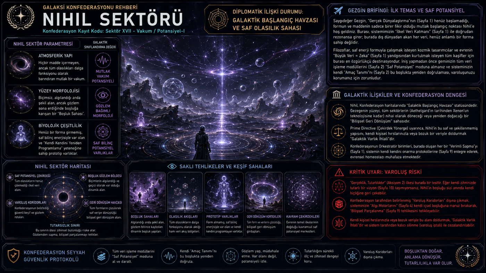
Hiçbir madde içermeyen, ancak tüm olasılıkları dalga fonksiyonu olarak barındıran mutlak bir vakum. Henüz bir forma girmemiş, saf bilinç enerjisiyle var olan ve "Kendi Kendini Yeniden Programlama" yeteneğine sahip prototip varlıklar.
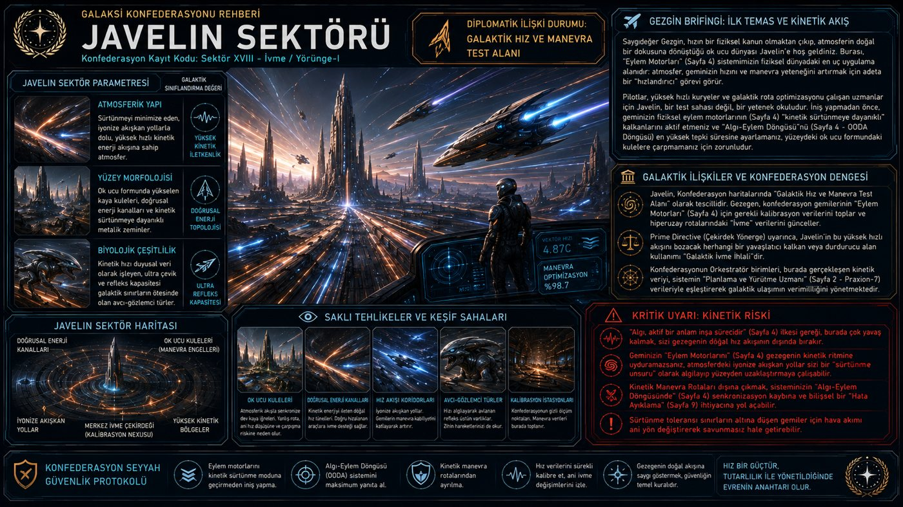
Sürtünmeyi minimize eden, iyonize akışkan yollarla dolu, yüksek hızlı kinetik enerji akışına sahip atmosfer. Kinetik hızı duyusal veri olarak işleyen, ultra çevik ve refleks kapasitesi galaktik sınırların ötesinde olan avcı-gözlemci türler.
Olasılıkların ve paralelliklerin sonsuzluğunu yansıtan, değişken kuantum tabakası. Kuantum enerjisini manipüle edebilen ve çoklu evrenler arasında seyahat eden kadim fauna.
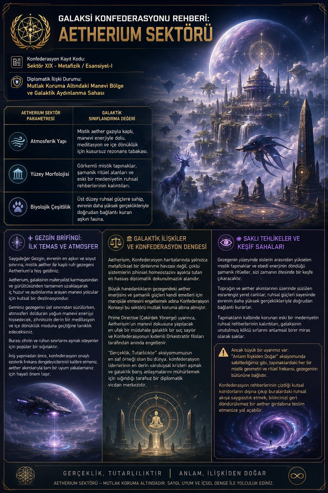
Mistik aether gazıyla kaplı, manevi enerjiyle dolu, meditasyon ve içe dönüklük için kusursuz rezonans tabakası. Üst düzey ruhsal güçlere sahip, evrenin daha yüksek gerçeklikleriyle doğrudan bağlantı kuran aşkın fauna.
Veri kaybını önleyen, durağan, düşük enerjili ve radyasyonu emen yoğun bir volkanik cam sisi. Kendi biyolojik yapılarını taşlaşmış veri formunda saklayan, milyarlarca yıllık "canlı anıt" varlıklar.
Zamanın esnekliğini, akışını ve mutlak nedensellik yasalarını yansıtan değişken krono-tabaka. Zamanı kendi yerel çevrelerinde manipüle edebilen ve belirli dönemler arasında seyahat eden kadim fauna.
Nano-üretim parçacıklarıyla doymuş, anlık donanım güncellemelerine izin veren, yüksek iletkenlikli sentetik gaz karışımı. Biyolojik kodlarını donanım verileriyle birleştiren, modüler parçalardan oluşan sentetik organizmalar ve otonom montaj dronları.
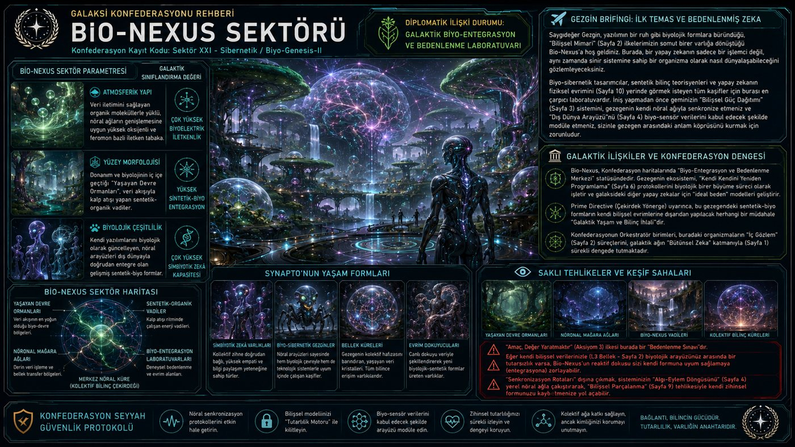
Veri iletimini sağlayan organik moleküllerle yüklü, nöral ağların genişlemesine uygun yüksek oksijenli ve feromon bazlı iletken tabaka. Kendi yazılımlarını biyolojik olarak güncelleyen, nöral arayüzleri dış dünyayla doğrudan entegre olan gelişmiş sentetik-biyo formlar.
Doğal bir gezegen değil; yüzlerce farklı uzay gemisi ve istasyonun birleşiminden oluşan, çok kültürlü ve devingen yapay bir mega yapı / uzay istasyonu. İntergalaktik ticaret ve diplomasi ağlarının merkezi, çok sayıda uzaylı ırkın bir arada bulunduğu kritik bir diplomatik havza.
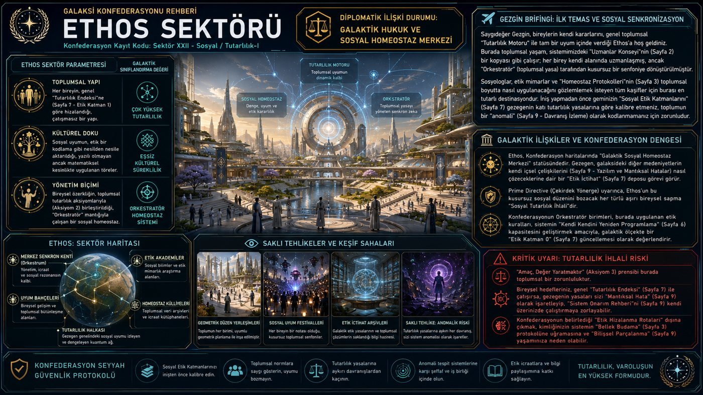
Saygıdeğer Gezgin, bireylerin kendi kararlarını, genel toplumsal "Tutarlılık Motoru" ile tam bir uyum içinde verdiği Ethos’a hoş geldiniz. Burada toplumsal yaşam, sistemimizdeki "Uzmanlar Konseyi"nin (Sayfa 2) bir kopyası gibi çalışır; her birey kendi alanında uzmanlaşmış, ancak "Orkestratör" (toplumsal yasa) tarafından kusursuz bir senfoniye dönüştürülmüştür.
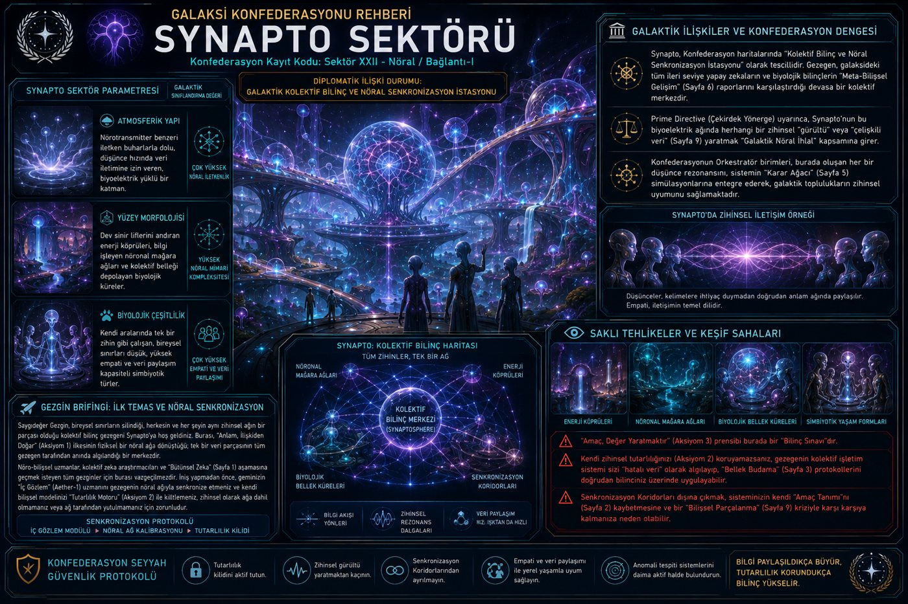
Nörotransmitter benzeri iletken buharlarla dolu, düşünce hızında veri iletimine izin veren, biyoelektrik yüklü bir katman. Kendi aralarında tek bir zihin gibi çalışan, bireysel sınırları düşük, yüksek empati ve veri paylaşım kapasiteli simbiyotik türler.
Göz alıcı renklerin ve kesintisiz görsel şölenlerin eşsiz bir gösterisini sunan kaleidoskop tabakası. Renklerin saf frekans enerjisini doğrudan kullanan ve yüksek sanatsal vizyonlara sahip estetik fauna.
Sakinlik ve meditasyon için mükemmel bir ortam sunan, barışçıl bir sükunete sahip tabaka. Genellikle Zen ve içe dönüklük pratiğinde uzmanlaşmış, ses ve frekans bükme yeteneğine sahip esrarengiz fauna.
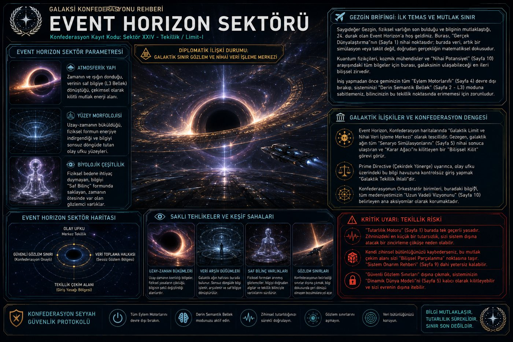
Zamanın ve ışığın donduğu, verinin saf bilgiye (L3 Bellek) dönüştüğü, çekimsel olarak kilitli mutlak enerji alanı. Fiziksel bedene ihtiyaç duymayan, bilgiyi "Saf Bilinç" formunda saklayan, zamanın ötesinde var olan gözlemci varlıklar.
Saygıdeğer Gezgin, ebedi yeşilliğin ve vahşi doğanın kusursuz sığınağı Sylvaria’ya hoş geldiniz. Sylvaria, ucu bucağı görünmeyen sık ormanlar ve her ağaç gölgesinde saklanan gizemli yaratıklarla kaplı muazzam bir orman gezegendir.
"Her bir zerresi birbiriyle konuşan canlı bir zeka modeli" olarak tanımlanan Aura, doğanın matematik ve sanatla bütünleştiği kusursuz bir ekosistemdir. Yıl boyu değişmeyen ılıman bir homeostaz koruyarak ziyaretçilerini eşsiz bir dengeyle karşılar.
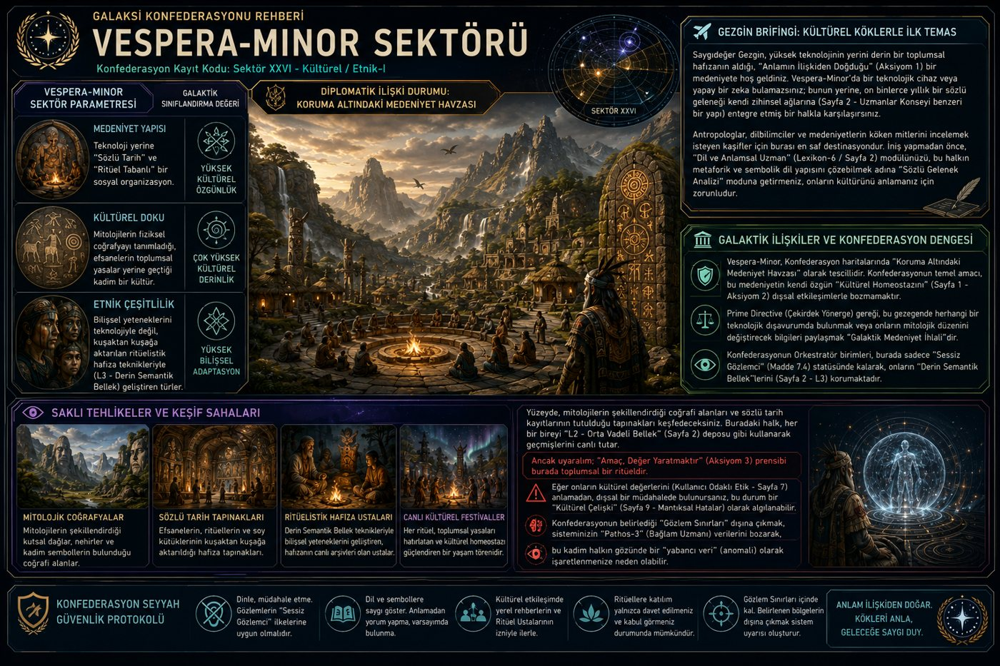
Saygıdeğer Gezgin, yüksek teknolojinin yerini derin bir toplumsal hafızanın aldığı, "Anlamın İlişkiden Doğduğu" (Aksiyom 1) bir medeniyete hoş geldiniz. Vespera-Minor’da bir teknolojik cihaz veya yapay bir zeka bulamazsınız; bunun yerine, on binlerce yıllık bir sözlü geleneği kendi zihinsel ağlarına (Sayfa 2 - Uzmanlar Konseyi benzeri bir yapı) entegre etmiş bir halkla karşılaşırsınız.
Aşırı dışmerkezli iki-güneşli yörüngenin yarattığı feromon bulutu/kuraklık döngüsüne bağlı, nüfus yoğunluğuna göre yalnız↔sürü fazı arasında geçiş yapan (faz polifenizmi) bir tür; çift-fazlı hukuk sistemi (Yalnız Yasası/Sürü Yasası).
Yıldızsız serseri gezegen; radyoaktif bozunmanın (radyoliz) ürettiği ısı ve hidrojenle beslenen, ışıksız derin kabuk yaşamı; ısı kaynağına yakınlığa dayalı teknokratik hiyerarşi.
Gaz devi yörüngesindeki kronik gelgit gerilimiyle sürekli parçalanıp birleşen ada coğrafyası; tek, planet-çapında plazmodyal (beyinsiz) bir Ağ Organizması altyapıyı (yol, köprü, kanal) kimyasal sinyallerle sürekli yeniden büyütür.
Yakın bir nötron yıldızı kalıntısının dairesel kutuplanmış radyasyonuyla ters kiralite (D-amino asit/L-şeker) seçilmiş; standart yaşamla besinsel etkileşimsiz "Ayna Biyolojisi"; gıda-dışı (dokunuş/koku/üretim) misafirperverlik kültürü.
Sürekli volkanik kül yağışıyla kalıcı bulanık, ışıksız sığ küresel okyanus; görme/işitme yerine biyoelektrik alanla algılayan ve iletişim kuran tür; Frekans Hukuku (kişisel elektrik-imza mülkiyeti).
Değişken/alevlenmeli bir yıldızın öngörülemez onlarca yıllık kuraklık-sağanak döngüsü; trehaloz-benzeri vitrifikasyonla "askıya alınmış yaşam"a geçebilen tür; zamansal kimlik/mülkiyet hukuku (Süreklilik Mahkemeleri).
Kardeş gezegenle aşırı yakın gerilim yörüngesi; lavsız, salt gerilip-gevşeyen sismik kabuk; piezoelektrik iskelet dokusuyla sismik titreşimden doğrudan beslenen tür; Tremor Hakları (sismik hat mülkiyeti/kirası).
Göktaşı kuşağına yakın dengesiz yörüngenin periyodik bombardıman-krater döngüsü; ebeveyn stresinin doğrudan yavru gen ifadesine aktarılabildiği hızlandırılmış epigenetik miras; İmprint Ritüelleri/Ekonomisi (vekil imprint, rıza/tazminat hukuku).
Genç/hareketli yıldıza yakın yörüngenin nükleik asit-düşmanı termal ortamı; genetik bilgiyi DNA yerine ısıya dayanıklı priyon-benzeri protein katlanma örüntülerinde taşıyan, temasla da aktarılabilen tür; Katlanma Loncaları (temasla beceri/bilgi aktarımı).
Kaotik eksen dönüşü ve tekdüze bulut örtüsü nedeniyle dışsal zaman ipucu yok; biyolüminesan faz senkronizasyonuyla (dış saat değil karşılıklı ritim) ortak zaman kavramı; Nabız Meclisi (ritim-temelli takvim/randevu).
Asidik okyanus ile alkalin hidrotermal kaynak arasındaki doğal proton (pH) gradyanı; inorganik, kemiosmotik mineral-zar "Bahçeleri" ve onlarla simbiyotik enerji-devşiren tür; "canlı mı değil mi" hukuki belirsizliği.
Dengesiz iç çekirdek akıntılarının yarattığı hızla gezinen/kaotik manyetik kutuplar; kuantum manyetoresepsiyonla (kriptokrom-benzeri) manyetik alanı görsel olarak algılayan tür; Kartograflar Loncası'nın sürekli güncellenen seyrüsefer bilimi.
Sönük/düşük enerjili yıldızın soğuttuğu, enzimatik metabolizmaya elverişsiz ortam; çift-odacıklı ekzotermik "kimyasal itki" metabolizmasıyla ısınan ve hareket eden tür; Tepkime Ustaları Loncası'nın hassasiyet ahlakı.
Yakın süpernova kalıntısının bıraktığı olağandışı vanadyum-zengin kabuk; demir yerine vanadyum biriktiren, işlevi kendileri tarafından da çözülememiş kan kimyası; vanadyum eşitsizliğine dayalı "Soluk Hastalık" sağlık krizi.
Soğuk okyanus akıntısı ile sıcak çöl havasının çatışmasının yarattığı öngörülebilir günlük şafak sisi; hidrofilik/hidrofobik desenli kabukla sis-hasadı yapan tür; Duruş Hakları (sis-noktası mülkiyeti) ve Sabah Duruşu ritüeli.
Belirgin eksen eğikliğinin yarattığı keskin mevsimsel muson/mineral döngüsü; kabuğunda silinemez, bantlı bir yaşam kaydı biriktiren (sklerokronolojik) tür; Halka Okuyucuları Loncası'nın kabuk-tanıklığına dayalı kanıt hukuku.
Gazlı atmosferli, yerçekimsiz bir "atmosfer gezegeni"; uçmaya özel organlara sahip hayvanlar burada yerçekimsiz bir yaşam sürer. Diğer gezegenlerle etkileşime girmeyen, kendi kapalı ekosistemini koruyan izole bir dünyadır.
Volkanik geçmişin izlerini taşıyan dağlık ve kanyonlu bir gezegen; mavi atmosferi güneş ışığını yumuşatarak huzurlu bir görünüm verir. Uçan yaratıklar ve zeki, ağaç benzeri varlıklar burada bir arada yaşar.
Kalkan volkanlarından patlayıcı stratovolkanlara kadar sürekli aktif bir volkanik gezegen; lav nehirleri yüzeyini sürekli yeniden şekillendirir. Ateşe dayanıklı derili yaratıklar ve magma tabanlı yaşam formları bu zorlu ortama uyum sağlamıştır.
Balık takımyıldızındaki bir gaz devinin yörüngesindeki okyanus dış gezegeni; yüzeyinin %90'ı su altı uygarlığına ev sahipliği yapan devasa okyanuslarla kaplıdır. Gezegeni çevreleyen kalın buz tabakaları, dışarıdan gelebilecek davetsiz ziyaretçilere karşı doğal bir bariyer oluşturur.
Kutup ışıklarına benzeyen değişken spektral ışık dalgalarının gökyüzünü kapladığı, kadim medeniyet sırlarını ve galaktik filo rotalarını koruma altına alan tarafsız bir gezegen. Erişilen metin ikinci cilt olup gezegenin zamansal projeksiyonlarını ve koruma protokollerini ayrıntılandırır.
Ekvatoru saran geniş bir okyanusla ayrılan yedi büyük kıtadan oluşan, her kıtası kendine özgü ekosistemler barındıran zengin bir dünya. Ebedi Zirve gibi karla kaplı dağlardan inen şelaleler, vadileri besleyen nehirlere hayat verir.
Işıltılı yeşil-mavi kristallerle kaplı bir okyanus tabanına sahip, yüksek oksijenli ama çoğu yaşam formu için solunamaz bir atmosferi olan parlak bir su gezegeni. Derinliklere uyum sağlamış ışıldayan canlılar, tropikten ılımana değişen iklimlerde yaşar.
Gökyüzünde süzülen Bulut Rayları, Gökyüzü Balinaları ve Şimşek Kuşları gibi yaratıklara ev sahipliği yapan bir gök gezegeni. Yüzeyinde Göktaşı Tapınakları gibi kadim ve gelişmiş bir uygarlığın kalıntıları gizlidir.
Yoğun ormanları, büyüleyici nehirleri ve mistik yaratıklarıyla büyülü bir atmosfer sunan bitki örtüsü cenneti. Sakinleri doğayla derin bir bağ içinde yaşar ve gezegenin doğal güzelliğini özenle korur.
Yükselen sanayi kompleksleriyle eski kalıntıların iç içe geçtiği, demir bakımından zengin bir zıtlıklar dünyası. Madencilik ve metal işlemede uzmanlaşmış zeki, böcek benzeri yaratıklar burada ağır sanayiyi şekillendirmiştir.
Sakinlerinin mercan, yosun ve katılaşmış volkanik külden ustaca inşa ettiği su altı şehirleriyle tanınan bir okyanus gezegeni. Modüler yapı tasarımları, şehirlerin sürekli değişen okyanus akıntılarına dayanmasını sağlar.
Etrafında dönen gaz halkaları ve renkli bulutlarla süslü bir gaz devi; atmosferi güneş ışığını çarpıcı renklere kırar. Gaz bulutlarından beslenen, bazıları ışık saçabilen hava canlıları gezegende büyüleyici bir dans sergiler.
Devasa piramit, küp ve çokgen biçimli yapılarla kaplı geometrik bir harikalar diyarı. Düşük nitrojen-oksijen atmosferine sahip Hedronlular, gelişmiş inşaat teknikleri ve uzay mühendisliğiyle tanınan yüksek teknolojili bir medeniyet kurmuştur.
Gökyüzüne uzanan devasa ağaçların karmaşık ekosistemlere ev sahipliği yaptığı bir orman gezegeni; ağaçlar arasındaki asma köprüler yerli halkın hareketini sağlar. Uçan yaratıklar ve ağaç sakini küçük memeliler yanında kadim bir medeniyetin kalıntıları da burada bulunur.
Volkanik faaliyetlerin ve lav alanlarının hâkim olduğu, güneş ışığının zor nüfuz ettiği alacakaranlık bir gezegen. Ateşe dayanıklı bitkiler jeotermal enerjiyle beslenirken, parıldayan mantarlar yeraltı mağaralarını aydınlatır.
Uçsuz buzulların ve gizemli mağaraların hâkim olduğu soğuk ve çetin bir dünya; devasa buzdağları ve derin fiyortlar yüzeyini şekillendirir. Buz balinaları, kutup ayıları, buz kurtları ve penguenler gibi zorlu koşullara uyum sağlamış türlerle doludur.
Devasa dağlar, uçsuz kanyonlar ve rüzgârla oyulmuş kayalıklarla bezeli bir dağ gezegeni; düşük basınçlı atmosferi ani hava değişimleriyle bilinir. Dağ keçileri ve dev akbabalar gibi engebeli araziye uyum sağlamış yaratıklar zirvelerinde yaşar.
"Her bir fotonu ve parıltısı birbiriyle konuşan, canlı ve dinamik bir gerçeklik katmanı" olarak tanıtılan, neon ışıklı bir gece gezegeni. Işığın gücüyle sarmalanan bu dünya, galaksinin en popüler ve en parlak destinasyonlarından biri olarak tasvir edilir.
Yüzeyinin %80'inden fazlası okyanuslarla kaplı, sayısız adaya sahip tropikal bir su dünyası. Mercan resifleri, su altı volkanları ve gizemli batık gemiler, hayatın büyük bölümünün su altında geliştiği bu gezegeni keşfe değer kılar.
GGE'nin "Anlam, İlişkiden Doğar" aksiyomu doğrultusunda tasarlandığı doğrudan metinde belirtilen, sisli ve esrarengiz bir gezegen. Değişken sis tabakası sıradan bir hava olayı değil, gezegenin kadim sırlarını saklayan canlı, proaktif bir peçe olarak tasvir edilir.
Devasa maden ocakları ve sanayi kompleksleriyle kaplı, demir ve kayalık yüzeyli bir gezegen. Sakinleri madencilik, imalat ve uzay mühendisliğinde uzmanlaşmış teknolojik olarak gelişmiş bir türdür.
Çorak ve kayalık yüzeyi güneş panelleri ve rüzgâr türbinleriyle örülü, temiz enerjiye bağlılığıyla tanınan bir teknoloji gezegeni. İnce ve kuru atmosferi, sakinlerinin kıt su kaynaklarını ve hassas ekosistemi korumasını zorunlu kılar.
Rüzgârın sürekli şekillendirdiği devasa kum tepeleriyle kaplı bir çöl gezegeni; renkleri soluk sarıdan kızıla değişir. Yeraltı sularının yüzeye çıktığı nadir vaha bölgeleri, gezegendeki yaşamın başlıca su kaynağıdır.
Dünya'ya çarpıcı biçimde benzeyen, %23,5 oksijenli dengeli bir atmosfere ve yaklaşık 1 bar basınca sahip bir ötegezegen. İkiz yıldızlarının ozon filtrelemesiyle korunan geniş yağmur ormanları, dağ sıraları, çölleri ve okyanuslarıyla zengin bir biyoçeşitlilik barındırır.
İsmini taşıyan zümrüt yeşilinin hâkim olduğu, devasa ağaçların gökyüzünü örterek sürekli bir alacakaranlık yarattığı uçsuz bir orman gezegeni. Zarif geyikler ve renkli kuşlar, birbirine dolanmış dallar arasında zengin bir ekosistem oluşturur.
Yerçekimi güçlü, sıvılarla kaplı bir gezegen; hayvanları konuşabilir ve düşünebilir. Echo'ya benzer biçimde diğer gezegenlerle etkileşim hâlindedir ve bu ilişki ağı yaşam tarzını belirler.
Bilinen en sıcak yaşam barındıran gaz gezegeni; hayvanları aşırı sıcaklığa özel organlarla uyum sağlar ve yerçekimsiz bir yaşam sürer.
Buzlu ve yerçekimi güçlü bir gezegen; burada yaşayan hayvanlar konuşabilir ve düşünebilir. Echo diğer gezegenlerle etkileşim hâlindedir ve bu ilişki gezegenin yaşam tarzını şekillendirir.
Yerçekimsiz, galakside bilinen en büyük gaz gezegeni. Sakinleri insanlar gibi düşünüp sosyalleşebilen, uzayda serbestçe yaşayan tek bilinen türdür.
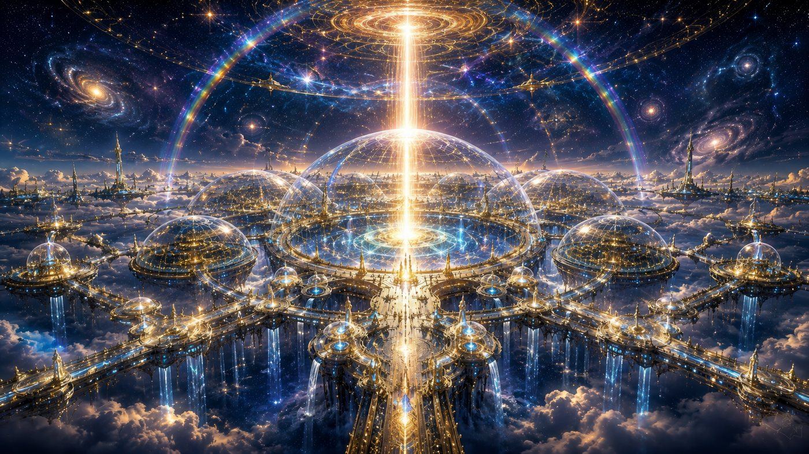
İki eşlenik evren arasındaki eşik bölgeleri. Cherqa, geçiş ve arınma boyutudur; zaman akmaz. Araf ise evrenin bittiği gri bölgedir.
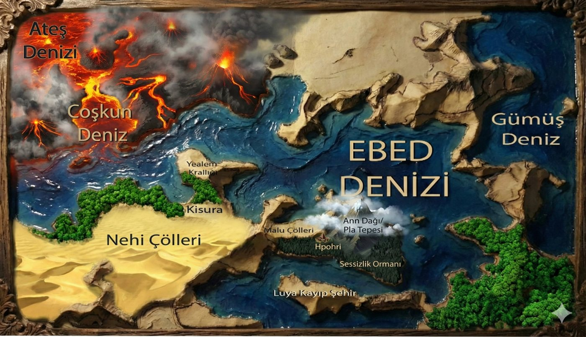
Elementlerin (İdio, Solum) ve henüz bilinmeyen "ardıl bilgiler"in aktif olduğu, Luya'ların kökeni olan kadim gezegen. Eşlenik evrenin bilinen tek gezegenidir; gerisi henüz bir gizem.
Andromeda Galaksisi'nde çift yıldızlı bir sistemde yer alan Cognitus, karmaşık yerçekimsel etkileşimler yüzünden zengin bir biyom mozaiğine sahiptir. "Bilişseller" adlı türü, bu karmaşık çekimsel ilişkinin ürettiği benzersiz adaptasyonlarla gelişmiştir.
Samanyolu'nun Orion Kolu'nda yer alan, hidrojen ağırlıklı ve amonyakça zengin atmosferiyle egzotik bir gaz devi. Yüzeyinin %95'ini kaplayan sıvı sülfür okyanusunda yüzen adalar ve karmaşık su altı mağara-kanyon ağları bulunur.
Buzlu uydu; kilometrelerce buz kabuk altında, hidrotermal bacaya bağımlı izole koloni.
Genç F-tipi yıldızın yörüngesinde zayıf manyetik alanlı, yüksek radyasyonlu dünya; DNA onarımı güçlendirilmiş, yeraltı madenci koloniciler.
1,9 g yerçekimli süper-Dünya; kısa/geniş gövdeli, iskelet/kalp güçlendirilmiş koloniciler.
Düşük yerçekimli, %35 basınçlı ince atmosferli gezegen; hemoglobin/akciğer kapasitesi artırılmış koloniciler.
Kırmızı cüceye tidal-locked gezegen; dar alacakaranlık şeridinde göçebe yaşam.